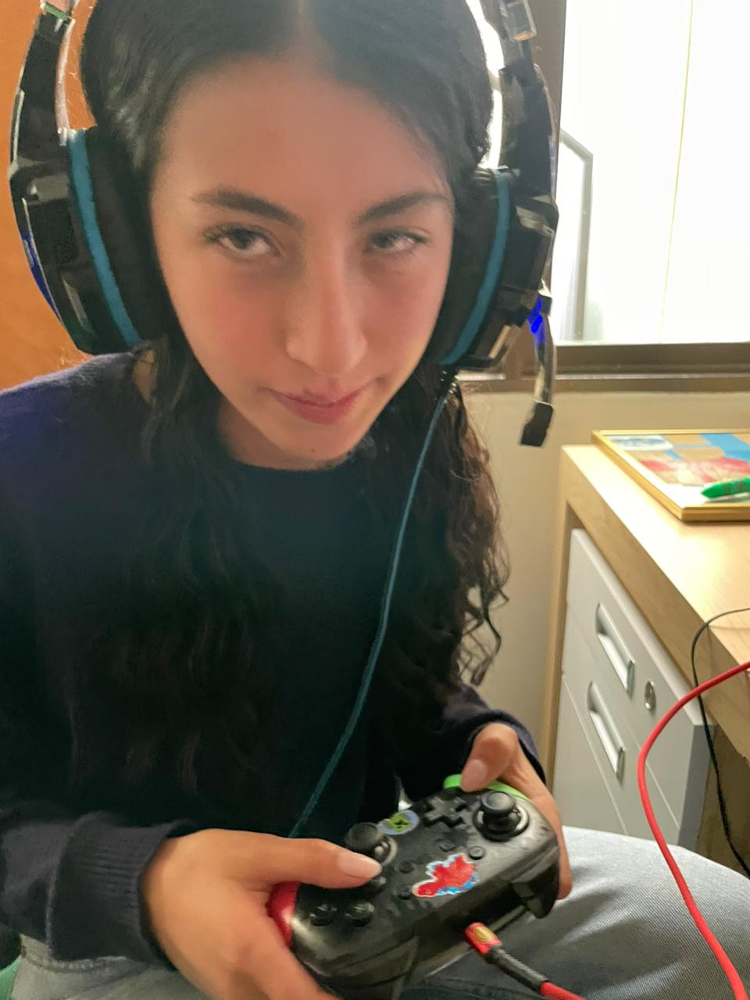

Solo quiero que me perdones 😭

Sofi,
Quiero empezar pidiéndote perdón por todo esto y por cómo te hice sentir. Nunca fue mi intención lastimarte ni hacerte pensar cosas que no son. Me duele saber que esto nos puso así, porque tú eres lo más importante para mí. Quiero explicarte algo con total honestidad: hace unos meses yo me alejé de Alejandra, pero lo único que yo quería ahora era recuperar la amistad con ella. Nada más. Es alguien que conozco desde pequeño y para mí siempre ha sido solo una amiga. Sí, en un pasado me llegó a gustar, y no lo niego, pero eso ya quedó completamente atrás. Hoy no siento nada por ella y no hay segundas intenciones de ningún tipo. Tú eres la mujer que amo, Sofía. Mi corazón es tuyo y solo tuyo. No hay nadie más en mi vida con quien quiera estar que no seas tú. Lo único que yo quería era no perder una amistad de tantos años, no hacerte sentir incómoda ni causarte problemas en nuestra relación. También quiero decirte que te prometo que no voy a ser tan cercano con ella. Yo respeto lo nuestro y te respeto a ti por encima de todo. Solo quiero volver a ser su amigo y ya, sin que eso afecte lo que tenemos tú y yo. Y de verdad quiero decirte que no quiero seguir peleando ni viviendo esta guerra fría contigo. Sinceramente esto me tiene demasiado mal y no me gusta nada sentirnos así. Yo quiero seguir contigo, Sofi, y luchar juntos por nuestro amor, porque tú eres la mujer a la que yo amo.
Perdóname, amor. Te amo con todo mi corazón y lo único que quiero es que estemos bien otra vez.
Con todo mi amor, Samu❤️